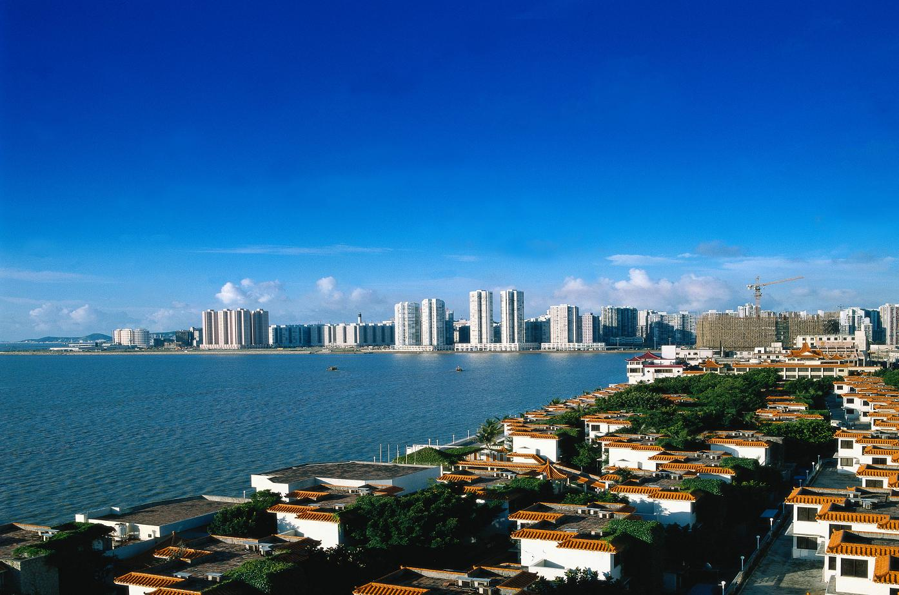

Китай
Краткая информация
-
Место: 3 (ТОП-10)
-
Площадь: 9 596 961 км²
-
Население: 1 442 965 000 чел. (2021 г.)
-
Столица: Пекин (с 1949 г.)
-
Язык: путунхуа (китайский)
-
Валюта: Китайский юань (CNY)
-
Крупнейшие города: Гонконг, Пекин, Шанхай, Шэньчжэнь, Гуанчжоу, Чунцин, Харбин, Тяньцзинь, Нанкин, Чэнду
Георафическое положение и границы
-
Китай на карте
-
Китай
Китай расположен в Восточной Азии. Граничит с четырнадцатью странами (КНДР, Россия, Монголия, Казахстан, Киргизия, Таджикистан, Афганистан, Пакистан, Индия, Непал, Бутан, Мьянма, Лаос и Вьетнам), протяженность сухопутной границы – 22,8 тыс. км. Континентальная часть омывается водами Желтого, Восточно-Китайского и Южно-Китайского морей, береговая линия — более 18 тыс. км.
Морское побережье Китая протянулось от границы с Северной Кореей на севере до границы с Вьетнамом на юге. Китай омывается Жёлтым, Восточно-Китайским и Южно-Китайским морями. Остров Тайвань отделён от материка Тайваньским проливом. Протяжённость страны с запада на восток (от Памира до Шанхая) — около 4,5 тыс. км, с севера на юг (от реки Амур по границе с Россией до южной оконечности острова Хайнань) — около 4,1 тыс. км.
Сколько часовых поясов в Китае сейчас?
-
Часовой пояс Китая
-

Часовые пояса Китая
Несмотря на то, что по факту Китай раскинулся на территории пяти часовых поясов, вся страна живёт лишь по пекинскому времени (GMT/UTC +8), опережающему Москву на 5 часов.
Поэтому в наше время наблюдается некий коллапс, который вводит некоторых туристов в состояние непонимания, ведь в западных регионах страны светать начинает около 10 утра, по местному времени, а в восточных провинциях сумерки могут наступить сразу после обеденного времени.
Перевод часов на летнее и зимнее время в Китае не производится.
Для нивелирования данной особенности, в западных провинциях, например в Синьцзян-Уйгурском автономном регионе, офисы и различные государственные учреждения начинают свою работу в 10 часов утра по Пекинскому времени.
Климат
Климат Китая очень разнообразен — от субтропического на юго-востоке до резко континентального на северо-западе. На южном побережье погода определяется муссонами, которые возникают из-за различных поглощательных свойств суши и океана. Сезонные движения воздуха и сопутствующие ветра содержат большое количество влаги в летний период и довольно сухие зимой. Наступление и отход муссонов в большой степени определяют количество и распределение осадков по стране. Огромные разницы по широте, долготе и высоте на территории Китая порождают большое разнообразие температурных и метеорологических режимов, несмотря на то, что большая часть страны лежит в области умеренного климата.
Самая северная провинция Китая Хэйлунцзян находится в области умеренного климата, похожего на климат Владивостока и Хабаровска, а южный остров Хайнань — в тропиках. Разница температур между этими регионами в зимние месяцы велика, но летом различие уменьшается. В северной части Хэйлунцзяна температура зимой может опускаться до −38 °C, средние температуры января — около −16 °C. Средняя температура июля в этой области составляет 20 °C. В южных же частях провинции Гуандун средняя температура колеблется от 10 °C в январе до 28 °C в июле.
-
Климатические пояса
Количество осадков изменяется даже в большей степени, чем температура. На южных склонах гор Циньлин выпадают многочисленные дожди, максимум которых приходится на летние муссоны. При движении к северу и западу от гор вероятность дождей уменьшается. Северо-западные районы страны — самые сухие, в расположенных там пустынях (Такла-Макан, Гоби, Ордос) осадков практически нет.
Южные и восточные области Китая часто (около 5 раз в год) страдают от разрушительных тайфунов, а также от наводнений, муссонов, цунами и засух. Северные районы Китая каждую весну накрывают жёлтые пыльные бури, которые зарождаются в северных пустынях и переносятся ветрами в сторону Кореи и Японии.
Вывод: в Китае представлены три вида климата: преобладающим является тропический климат, протянувшийся вдоль южного побережья и островов субтропический климат – находится в центральной части страны на западе, севере и востоке – континентальный климат
Природа Китая
Природные зоны Китая отличаются большим разнообразием, и связано это с внушительными размерами территории страны и ее географическим расположением. На одной площади закономерно сменяют друг друга такие природные комплексы как тайга, степи и лесостепи, муссонные и переменно влажные леса, вечнозеленые жестколистные леса и области высотной зональности.
Более 2/3 страны занимают горные хребты, нагорья и плато, пустыни и полупустыни. Примерно 90 % населения живёт всего на 10 % площади страны — в прибрежных районах и поймах больших рек, таких, как Янцзы, Хуанхэ («Жёлтая река») и Чжуцзян. Эти территории находятся в тяжёлом экологическом состоянии в результате долгой и интенсивной сельскохозяйственной обработки и промышленного загрязнения окружающей среды.
Почвы
Почвы Китая меняются вслед за природными зонами. На северо-востоке преобладают луговые почвы, а северо-запад страны покрыт сероземами, серо-бурыми, горно-степными видами почв. На побережье реки Сунгари встречается чернозем. На равнинах преобладают красноземы.
-

Побережье реки Сунгари
Большой проблемой местных почв является их засоление, которое во многом связано с аридным климатом. На побережье Желтого моря засоление грунта зависит от непосредственной близости с морем. Земледелие в этих регионах возможно только после вымывания солей.
Серьёзную угрозу представляет и человеческая деятельность. Активная вырубка лесов и неконтролируемый выпас домашнего скота стали причинами того, что большие площади земель утрачивают свое плодородие и становятся пустынными.
Горы, реки, озёра и моря в Китае
Самые высокие и знаменитые горы в Китае:
- Гора Хуаншань или Желтые горы
- Гора Эмейшань
- Гора Лушань
- Гора Чанбайшань
- Гора Уишань
- Гора Юйшань
- Гора Утайшань
- Горы Хуашань
- Гора Джомолунгма или Эверест.
Самые крупные реки Китая это Янцзы, Хуанхе (Желтая река), Ланьцанцзян (Меконг), Хэйлунцзян (Амур), Чжуцзян, Сунгари, Нэньцзян. Янцзы. Имеет длину 6300 км, что делает её самой протяженной и полноводной рекой не только в Китае, но и на всем материке Евразия. Площадь её водосборного бассейна – 1,8 млн. км 2, что составляет 1/5 часть площади всей страны.
-

Река Янцзы
-

Река Янцзы
Крупнейшими озерами Китая являются Поянху, Тайху, Дунтинху, Хунцзэху, Нам-Цо, Цинхайху (Кукунор). Поянху. Самое большое пресноводное озеро Китая, его площадь в зависимости от сезона может изменятся: 2,7 тыс. км 2 (зимой), 5 тыс. км 2 (летом), длина – 120км, ширина – 17 км, средняя глубина – 8,4 м, максимальная – 25 м. Расположено в провинции Цзянси на юго-востоке Китая, на правом берегу реки Янцзы, их соединяет протока.
-

Озеро Поянху
-
Озеро Тайху
Территорию Китая омывают три моря. Общая длина линии берега – около 12 тыс. км. Моря относят к полузакрытым. Водоемы принадлежат бассейну Тихого океана. Моря возле Китая и бассейн Тихого океана разделяют небольшие острова, которых в этом районе более 3000.
Желтое море омывает территорию Китая и Корейского полуострова. Сюда впадают крупные китайские реки – и Хуанхэ в том числе. Море получило свое название из-за цвета, который приобретает вода в ней летом и весной. Все из-за пылевых бурь, которые несут песок в реку и окрашивают её в соответственный оттенок. Больших перепадов глубины здесь нет, море мелкое, но для отдыха на пляже – это не самый лучший вариант, поскольку в теплое время года здесь полно водорослей, а зимой место не пригодно для купания из-за низких температурных показателей. Исключением можно считать только курорт Циндао, который дает возможность отдохнуть и оздоровиться на протяжении всего года. Кроме того, здесь происходит вылов разных видов рыб, моллюсков, ламинарий, медуз и кальмаров.
-

Желтое море
Восточно-Китайское море омывает китайские берега и полосу островов Японии. Расположение моря в субтропическом климате дает возможность купаться практически круглый год, но не стоит забывать, что это область повышенной сейсмической активности. Именно из-за этого с середины весны до середины осени не редкость тайфуны и цунами. Но это не мешает активно развиваться курортной зоне с хорошей инфраструктурой. Здесь можно найти много водорослей, рыбы, морепродуктов. Нужно быть острожным, ведь в море обитают и ядовитые виды змей.
-

Восточно-Китайское море
Южно-Китайское море омывает не только Китай, но еще 7 стран. Китайское побережье возле этого моря идеально подходит для отдыха на пляже. Вода в море практически всегда чистая. Кроме китайского побережья для отдыха можно выбрать один из коралловых островов в море. Можно купаться даже зимой, ведь температура воды не опускается ниже +20°С. Но нужно рассчитывать и на муссонный климат в этих местах, который часто приносит дожди и тайфуны. Чаще всего для отдыха на берегу Южно-Китайского моря выбирают о. Хайнань или о. Тайвань. Море также используют для вылова морепродуктов.
-

Южно-Китайское море
Моря возле Китая входят в состав бассейна Тихого океана. Это самый глубокий и большой океан на планете.
Список крупнейших водопадов Китая
Самыми красивыми из них являются:
Хуангошу (Huangguoshu). Крупнейший водопад Китая находится в окружении реликтовой и эндемической растительности на территории одноименного национального парка. При длине 78 м его ширина достигает 101 м. Рядом с ним находятся еще двадцать водопадов, вместе с которыми он образует крупнейшую систему водопадов в мире. Идеальным временем для того, чтобы оценить эту мощь и красоту, считается период с мая по октябрь. Добраться до водопада Хуангошу в Китае можно через Гуйян. В столице провинции Гуйчжоу формируются автобусы, которые доставляют до природной достопримечательности за 2-3 ч.
-

Водопад Хуангошу
Хукоу (Hukou). Второй самый большой водопад Китая находится между провинциями Шэньси и Шаньси. Помимо размера, он интересен своим внешним видом. Со стороны кажется, будто вода с его вершины льется прямиком из горлышка чайника или кувшина. Не менее интересен цвет его потока, меняющийся от желтого до серого, а затем до голубоватого. Идеальным временем для экскурсии к водопаду Хукоу считается сезон дождей, который в Китае выпадает преимущественно на июль. Добраться до него можно на автобусе, отправляющемся из Сианя.
-

Водопад Хукоу
Дэтянь (Detian). Трехуровневый водопад простирается на китайско-вьетнамской границе. Причем основная его часть проходит через китайские земли, а до вьетнамских земель доходят только некоторые потоки. Со всех сторон Дэтянь окружает холмистая местность и рисовые плантации. Осмотреть его можно со смотровой площадки или с бамбуковых плотов, курсирующих вдоль водоема. Лучше всего это делать в середине лета. Добираться до природного объекта проще через Даксин, откуда до него 1 ч. езды.
-

Водопад Дэтянь
Цзючжайгоу (Jiuzhaigou). Группа живописных водопадов Китая, фото которых прикреплено ниже, располагается на территории национального парка с аналогичным названием. Особого шарма им добавляет красивое окружение – разноцветные водоемы, уютные деревни, хвойные леса и бамбуковые рощи. Самым известным из этой группы является Жемчужный водопад, ширина которого достигает 310 м, а высота – 28 м. Осенью, когда листья деревьев окрашиваются в красные, оранжевые и желтые оттенки, пейзажи становятся невероятно красивыми. Поэтому именно осенью следует посещать эти места. Добираться до них лучше через Чэнду или аэропорт, находящийся в горах на высоте около 3500 м.
-

Водопад Цзючжайгоу
Цзюлун (Jiulong). Водопад Китая, украшающий провинцию Юньнань, признан самым широким в стране. Он представляет собой многоступенчатый каскад, сформированный девятью водными потоками. Оценить эту красоту можно весной, когда окрестности водоема покрываются полевыми цветами. Ближе всего к Цзюлуну находится город Луопин. Здесь можно нанять такси, которое за 30 мин. доставит до природной достопримечательности.
-
Водопад Цзюлун
Искусственные водопады в Китае
Помимо природных объектов, страна славится оригинальными инженерными конструкциями. Одной из них является Либиан. Этот водопад Китая интересен тем, что создан руками человека. Он украшает 121-метровый небоскреб Liebian Building, расположенный в городе Гуйян. Высота самого водопада составляет 108 м. Вода на его вершину доставляется благодаря четырем насосам мощностью 185 кВт. За 1 ч. работы он тратит электроэнергии на $116. Именно поэтому посмотреть на искусственный водопад в Китае можно только во время праздников.
В июне 2019 г. в Гуанчжоу открыли смотровую площадку «Парящий мост» – Huangtengxia Tianmen. Она представляет собой железобетонную конструкцию, которая парит на высоте 500 м над землей и выступает на 368 м от утеса. Этот мост в Китае интересен искусственным водопадом, который размещается на его конце, завернутом в кольцо. Ночью его освещают многочисленные лампы и прожекторы. В сочетании с водой подсветка создает фантастическое музыкально-световое зрелище, сопровождающееся звуковыми спецэффектами.
Список вулканов в Китае
Туристам, планирующим посещение Китая, будет интересно узнать о самых больших вулканах, которые находятся в этой стране:
- Хэйлун. Более распространенное его название – Хэйлун-цзянь. Последнее извержение было еще в 1721 г., поэтому сегодня его считают потухшим. Увидеть вулкан Хэйлун на карте Китая можно в северо-восточной части страны. Он находится в Национальном парке Удаляньчи. Его высота – 515,9 м над уровнем моря, а диаметр – 350 м. Вершина вулкана – воронкообразный кратер. У подножья земля покрыта вулканическим пеплом. Подниматься по некоторым тропам очень сложно из-за их крутизны. Большинство туристов приезжают сюда в летнее время. Каждый год в этот период на реке, протекающей у подножья Хэйлун, проходит праздник лодок-драконов.
- Ма Ань. Это известная достопримечательность находится на острове Хайнань, рядом с городом Хайкоу. Вулкан считают в Китае давно потухшим: последнее извержение было примерно 40 тыс. лет тому назад. Неподалеку от него расположено два действующих вулкана: Лоцзинпань и Лэйхулин. В склонах горы есть много гротов, которые в течение веков образовывались под влиянием различных природных факторов. Ма Ань покрыт застывшей лавой, среди магматических пород произрастают тропические деревья и реликтовые кустарники. На вершину вулкана, где оборудована смотровая площадка, можно подняться по каменным ступеням. У подножья вулкана устроен парк. В пальмовой роще находится ресторан, а на установленной рядом с ним сцене нередко выступают местные артисты.
-

Вулкан Ма Ань
- Чанбайшань. Стратовулкан, расположенный на северо-востоке Китая на границе с Кореей, имеет высоту 2744 м. Название этого вулкана в Китае переводится как «вулкан с белой головой», поскольку его вершина покрыта снегом в течение 8 месяцев в году. Последнее извержение этого самого большого вулкана в Китае произошло в 1702 г. В результате на вершине горы образовалось озеро Тяньчи глубиной 1 км. Подняться к нему можно по серпантинной дороге. В 1994 г. учеными было зафиксировано выделение газа из кратера вулкана. Окружающая местность с уникальными пейзажами объявлена биосферным заповедником.
- Тенгчонг. Действующий вулкан высотой 2865 м считается одним из самых высоких в Китае. Находится он в китайской провинции Юньнань. Последний раз он извергался 5 тыс. лет назад. Сегодня на вулкане происходят частые гидротермальные взрывы.
- Куньлунь. Это группа, состоящая из 70 вулканических конусов, расположенных в Тибете. Кратер самого большого из них находится на высоте 5808 м. Последний раз вулканическая активность проявлялась в 1951 г. После этой даты все вулканы Китая пока находятся в спящем состоянии.
Растительный мир Китая
В Китае насчитывается 7000 древовидных растений, 4000 вида целебных трав, 600 масличных видов, 300 фруктовых деревьев. Природные зоны Китая включают в себя степные, пустынные и луговые местности. Здесь есть лиственные, хвойные, субтропические листопадные и дождевые тропические леса.
Восточная и западная часть Китая сильно разграничены в плане растительности. Эти области разделены цепью горных хребтов. В них входят Гуйчжоуские горы, Большой Хинган, Тайханшань. На западе, где установился засушливый климат, растянулись пустынные территории. Там выпадает мало осадков, поэтому земля становится бесплодной. На ней вырастают ксерофиты, полынь, луковичные растения.
В таёжных местностях востока произрастают корейский кедр, даурская лиственница, маньчжурский орех. Леса на востоке Китая состоят из дубов, лип, кленовых растений. Они раскинулись в предгорных и горных районах, не расчищенных под сельскохозяйственные угодья. Территории Прихинганья заполнены злаковыми полями и разнотравьем. На востоке раскинулось огромное разнообразие реликтовых растений.
В Китае произрастает большое количество эндемиков – растений, которые невозможно встретить в других местах. К ним относятся метасеквой, лжелиственница, давидия, аргирофилла, глиптостробус. Лекарственные растения Китая – это лициум, женьшень, гинура, сафлор.
Главный цветок Китая – это пион, ставший символом этого восточного государства. Рядом с ним стоит зимняя слива Мэйхуа. В субтропических зонах повсеместно встречаются магнолии, камелии, орхидеи, лотосы, чайные розы, хризантемы.
-
Пионы
-
Пионы
Животный мир Китая
Мир китайской фауны насчитывает более 3,8 тыс. вида рыб, 1 тыс. видов птиц, десятая часть всех позвоночных животных планеты сосредоточена в Китае, что делает страну одним из лидеров по многообразию дикого животного мира. Около сотни видов фауны эндемичны и больше нигде не встречаются. Это ушастый фазан, золотистая обезьяна, красно-венценосный журавль, такин.
Множество древних видов остались с послеледникового периода. Это двугорбый верблюд из северо-западных пустынь, бамбуковый медведь и тарпан, которые начинают встречаться при движени дальше на север. Животные самых редких видов обосновались на юге. Это китайский аллигатор и китайский дельфин, плавающие в нижнем течении Янцзы, гигантская саламандра.
На пустынных территориях северо-запада Китая обитают лошадь Пржевальского, куланы, джейраны, суслики, корсаки. В лиственных лесах северо-востока живут куницы, белки, зайцы, волки, лисы, медведи, рыси, енотовидные собаки. В Тибете водятся гималайские медведи, антилопы оронго, кианга. В юго-западных бамбуковых лесах с мягким климатом расселились летучие собаки, панды, лори, тупайи, леопарды, гигантские белки. Юг странынаселяют носороги, лемуры, тапиры. В центральных горных областях нашли свое пристанище леопарды и тигры.
-
Джейран
-
Кулан
-
Панда
-
Лори
В Хэйлунцзянском парке-заповеднике сохранилась популяция амурских тигров величиной в 1 тыс. особей. С целью адаптации к условиям окружающей среды за ними установилось пристальное наблюдение. Проводятся регулярные медицинские осмотры и оздоровительные процедуры. Хищников кормят мясом и птицей, условия кормления приближены к естественным. Наблюдения за животными ведутся на протяжении 20 лет.
Природные ресурсы
Китай обладает большими запасами полезных ископаемых и является крупнейшим производителем сурьмы, графита, вольфрама и цинка. Среди других ресурсов — бокситы, уголь, нефть, алмазы, золото, железная руда, свинец, магнетит, марганец, ртуть, молибден, природный газ, фосфаты, олово, уран и ванадий. А также по запасам олова и вольфрама Китай занимает первое место в мире.
Благодаря обширным хребтам и горным рекам гидроэнергетический потенциал Китая — самый высокий в мире.
Полезные ископаемые
Добыча природных ресурсов составляет малую часть общего валового внутреннего продукта (ВВП) Китая и обеспечивает работой небольшую часть населения страны. Возникло несколько проблем в отношении добычи полезных ископаемых. Одна из них заключается в том, что открытия новых доказанных месторождений отстают от долгосрочных потребностей. Кроме того, продуктивность уже разработанных месторождений была низкой в подавляющем большинстве случаев за счет бесхозяйственности и использования устаревшего оборудования, а коэффициент извлечения продукта из руды зачастую был минимальным, что приводило к значительным отходам. Огромная масса таких отходов, оставленных на обширных земельных участках, а так же значительное количество загрязненных сточных вод, образовавшихся в результате горных разработок, стали причиной загрязнения рек и сельскохозяйственных угодий.
Уголь
Основными минеральными ресурсами Китая являются углеводороды, в частности уголь, месторождения которого широко распространены (некоторые виды угля присутствуют в каждой провинции, однако большая часть находится в северной части страны).
Значительные запасы наличествуют в провинциях Хэйлунцзян, Ляонин, Цзилинь, Хэбэй и Шаньдун. Крупные месторождения угля разведаны в провинции Сычуань, в Гуандуне, Гуанси, Гуйчжоу и др.
Нефть
Нефтяные запасы Китая сосредоточены вдоль береговой линии, главным образом на северо-востоке, особенно на нефтяном месторождении Дацин, а также в северо-западных провинциях Синьцзян (большей частью в бассейне Тарима), Ганьсу и Цинхай; также имеются резервы в провинциях Сычуань, Шаньдун и Хэнань.
-
Бассейн Тарима
Сланцевая нефть встречается в ряде мест, особенно в Фушуне (Ляонин), где ее месторождения перекрывают запасы угля, а также в провинции Гуандун. Высококачественная легкая нефть найдена в устье реки Чжуцзян, бассейна Кайдама в Цинхай и бассейна Тарима в Синьцзяне.
Страна заключила контракты с западными нефтяными компаниями для совместной разведки и разработки нефтяных месторождений в Китае, Желтом море, заливе Тонкин и Бо Хай. Большую часть собственной добычи и импорта нефти Китай потребляет самостоятельно, однако присутствует и экспорт сырой нефти и нефтепродуктов.
Природный газ
Истинные запасы природного газа неизвестны, тогда как доказанные составляют около 42 триллионов кубических футов (1,2 трлн. куб. м), но оценки колеблются до 187 триллионов кубических футов (5,3 трлн куб. м). Постепенно увеличивается объем разведки природного газа, который пока находится на довольно скромном уровне.
На долю провинции Сычуань приходится почти половина известных запасов и добычи. Большая часть остального природного газа в Китае — это попутный газ, добываемый на основных нефтяных месторождениях Северо-востока, в частности округ Дацин. Другие месторождения газа были обнаружены во Внутренней Монголии, бассейне Кайдама, Шеньси, Хэйбэй, Цзянсу, Шанхае, Чжэцзяне и на шельфе к юго-западу от о. Хайнань.
Металлы и неметаллы
В провинциях Хайнань, Ганьсу, Гуйчжоу, юг Сычуань и Гуандун имеются богатейшие месторождения железной руды. Китай хорошо обеспечен марганцем, рудами и концентратами, содержащими различные химические элементы (использующиеся при производстве ферросплавов), за исключением хрома, никеля и кобальта. Довольно велики запасы вольфрама. Высококачественная медная руда добывается всего на нескольких месторождениях, в целом же запасы меди довольно посредственные. Наличествуют свинец, цинк, и многочисленные ресурсы бокситов, а китайские запасы сурьмы крупнейшие в мире. Имеются богатые месторождения золота и олова. В Ляонин, Хэбэй, Шаньдун и Шаньси встречаются пириты.
На территории страны имеются большие запасы флюорита, гипса, асбеста и цемента. Кроме того, в Китае добывается значительный спектр нерудных минералов, наиболее важным из которых является соль, полученная испарением на прибрежных участках в Цзянсу, Хэбэй, Шаньдун и Ляонин, а также с обширных соляных полей в Сычуани, Нинся и Кайдама.
Энергетические ресурсы
Электроэнергетические мощности Китая резко возросли с 1980 года, и доля внутреннего потребления, также значительно увеличилась. Около четырех пятых всей электроэнергии генерируется на тепловых электростанциях, а все остальное на гидроэлектростанциях; лишь небольшая доля приходится на ядерную энергетику с АЭС, расположенных вблизи Шанхая и Гуанчжоу.
-

Тяньваньская АЭС
Земельные ресурсы
Китай, с его обширной территорией и разнообразными климатическими условиями имеет множество разновидностей почв. Все типы почв евразийского континента, за исключением почв тундры и сильно выщелоченных подзолисто-глеевых почв северной тайги (бореальный лес), встречаются в Китае. В результате климатических различий между сухим прохладным севером и влажным жарким югом почвы можно разделить на две группы: к северу от линии Цинь-Хуай известковые и нейтральные к щелочной реакции; к югу от этой линии, выщелоченные безщелочные почвы, нейтральные к кислоте.
Помимо больших плато и высоких гор на юго-западе, в Китае образуются почвенные зоны в соответствии с различиями в климате, растительности и расстоянии от моря. Восточный и юго-восточный прибрежные районы покрыты лесной зоной, связанной с влажным и полугумидным климатом. Северные и северо-западные внутренние районы относятся в основном к степной, а также к полупустынной и пустынной зонам, связанным с полузасушливым и засушливым климатом. Между этими двумя широкими почвенными зонами расположена переходная лесостепная зона, где лесные почвы постепенно сливаются со степными.
Между педокалями (почвами, содержащими карбонаты или насыщенные калием) Севера и кислыми почвами Юга лежат нейтральные почвы. Долина Янцзы в природном регионе «Три ущелья», покрыта толстым слоем аллювиальных отложений. Эти почвы, иногда классифицируемые как рисоводческие, по большей части чрезвычайно плодородны и имеют хорошую текстуру. Вдоль побережья Северного Китая находятся пояса соленых и щелочных почв, образовавшихся в связи с сочетанием плохого дренажа и засушливости, когда осадков недостаточно для растворения или удаления солей в растворе.
-

«Три ущелья» ГЭС
-
«Три ущелья» ГЭС
Негативное воздействие природы на почву еще больше усилилось в течение столетий интенсивного культивирования, что привело к дефициту азота и органических веществ. Недостаток органических веществ возник прежде всего потому, что китайские фермеры обычно полностью снимают стебли и листья на корма скоту и топливо. Навозы, используемые для удобрения, содержат слишком малое количество органики, чтобы компенсировать потерю питательных веществ. Почвы также часто имеют дефицит фосфора и калия, но эта нехватка не так широко распространена и не столь серьезна, как в случае с азотом.
Обширные леса в центральном и южном Китае были расчищены для сельскохозяйственных угодий, что привело к неизбежной эрозии почв с холмов и их осаждению в долинах. Фермеры строят уровневые террасы, укрепленные стенами, чтобы удерживать воду для рисовых полей, тем самым эффективно контролируя эрозию. Там, где были построены террасы, эрозия почвы практически отсутствует, а ступенчатые террасы стали характерной особенностью сельского пейзажа.
Водные ресурсы
В Китае насчитывается более 50 000 рек с отдельными дренажными участками, совокупно превышающими 40 квадратных миль (100 кв. км). Из общего годового стока около 95% стекает непосредственно в море: более 80% в Тихий океан, 12% — в Индийский, менее 1% — в Северный Ледовитый, а 5% исчезают внутри страны.
Три основные реки Китая протекая с запада на восток, сливаются в Китайское море, — это Хуан Хэ, Янцзы и Си. Хуан Хэ, стекающая с отрогов горного массива Куньлунь, является самой северной из трех. Она стекает в залив Бо Хай, к северу от полуострова Шаньдун.
-

Залив Бо Хай
Янцзы, самая длинная река страны, спускается с Тибетского нагорья и течет через центральный Китай, сливаясь с Восточно-Китайским морем к северу от Шанхая.
Распределение поверхностных вод в Китае крайне неравномерно. Всего несколько регионов получают достаточное количество воды в течение всего года. Большая часть страны имеет обильный сток, но только во время дождливого лета, когда возникают огромные излишки воды.
С юго-востока на северо-запад рельеф становится более гористым и количество поверхностных вод постепенно уменьшается. В течение всего года на обширной территории Северо-запада не хватает воды. Северный Китай (к северу от реки Цинь — линия реки Хуай), с его плоским рельефом и многовековой историей сельского хозяйства, включает в себя почти две трети обрабатываемых земель Китая. Парадоксально, что из-за скудных и неустойчивых осадков средний годовой сток на Севере составляет лишь около одной шестой от общего количества для страны в целом.
Горы на юго-востоке и гористый остров Хайнань имеют наиболее обильные поверхностные воды. В течение года здесь выпадают осадки более чем на 60 дюймов (в некоторых местах даже более 80 дюймов (2000 мм)), из которых почти две трети составляют сток, так что развивается плотная дренажная сеть. Величина стока наиболее высока на юго-востоке, превышая 40 дюймов (1000 мм) и постепенно уменьшаясь на запад и на север. В пустынях на северо-западе она обычно составляет менее 0,4 дюйма (10 мм). Засушливый климат северо-запада отражается в ландшафте сухих степей, для которого характерно обилие травы на востоке, а на западе пейзаж постепенно меняется на голые пустыни.
В низовьях Янцзы, дельты реки Чжуцзян и Чэндуской равнины была создана плотная сеть водных путей. На Северо-Китайской и Северо-Восточной равнинах большинство рек имеют линейный поток, а притоки малочисленны и не связаны между собой. Во внутреннем дренажном районе очень мало рек из-за скудных осадков.
Лесные и рыболовные ресурсы
Массовое уничтожение доступных лесов Китая в течение длительного периода времени сменилось энергичной программой восстановления, которая оказалась неадекватной: лесные ресурсы по-прежнему скудны.
Основные леса расположены в горах Цинь (Цинлинг), на центральных горных хребтах и возвышенностях Сычуань и Юньнань. Поскольку они труднодоступны, леса Цинь практически не используются для нужд промышленности, и большая часть древесины поступает из Хэйлунцзяна, Цзилиня, Сычуани и Юньнани.
Китай имеет давние традиции разработки океанических и пресноводных ресурсов, являясь ведущим мировым производителем в рыболовстве и аквакультуре. Основная часть улова приходится на рыболовство в Тихом океане, а почти все остальное добывается из внутренних пресноводных источников. Разведение рыбы и речных животных в прудах всегда было значительным и все чаще применяется в дополнение к прибрежным и внутренним рыбным промыслам, предоставляя ценные экспортные товары, такие как креветки.
Отдых
Лучшие курорты и пляжи Китая
Китай привлекателен для туристов многими факторами. Чтобы отдых был по-настоящему незабываемым, следует отдать предпочтение лучшим курортам страны:
- Бухта Ялуньвань (залив Ялонг, 25 км от Санья, Хайнань)
-
Бухта Ялуньвань
- Ваньнин (Хайнань)
-
Остров Хайнань
- Макао
-
Макао
- Далянь
-

Далянь
- Циндао
-
Циндао
- Бэйдайхэ
-
Бэйдайхэ
- Путошань
-
Путошань
- Санья
-
Санья
Преимущество этого места в климате – здесь он мягкий, температура в среднем составляет 27 градусов. Этот курорт довольно фешенебельный, поэтому богат на 5-звездочные отели, но есть и бюджетные варианты жилья. Важное преимущество бухты Ялуньвань – 7,5 км белого кварцевого песка (Ялонг Бэй) и прозрачная вода.
Это место привлекает дикой природой, белым песком, малолюдностью. Здесь одно из лучших мест для серфинга. На острове мало отелей и ресторанов, большая часть туристов посещают его во время экскурсий, после которых на пляжах остается немного людей.
Этот город был португальской колонией, поэтому помимо китайского языка здесь используется португальский. Курорт привлекает сочетанием азиатской и европейской культуры – это видно по местному населению, архитектуре города. Это очень фешенебельный курорт и привлекает он в первую очередь азартных людей, так как отличается высочайшей в мире концентрацией игорных заведений. Отличительной особенностью Макао является собственная валюта – патака (меньше юаня). Хорош здесь и пляжный отдых. Пляжи отлично оборудованы. Для отдыха с детьми лучше подходит пляж Колоан. Белоснежный песок можно найти на Чеок Ван, а черный вулканический – на Макао Хак-Са.
Этот крупный финансовый, туристический и транспортный центр страны раньше принадлежал Японии и России, что отразилось на его культуре и архитектуре. Здесь прекрасные морские пляжи, 118-метровый подводный тоннель, крупнейший в стране океанариум. Одним из лучших пляжей для прогулок считается тот, что на территории Laohutan Scenic Park.
Ещё один курорт на Желтом море. Это 25 км прибрежной зоны (ширина 3 км), чистая вода, масса исторических достопримечательностей и привлекательный шопинг.
Этот курорт находится на Желтом море и привлекает красивейшими бухтами и побережьем, которое протянулось на 11 км. Здесь развита инфраструктура, есть масса достопримечательностей и развлечений.Именно в Бэйдайхэ находится конец Великой китайской стены.
Этот остров имеет большое религиозное значение у буддистов, а туристов привлекает еще и своими великолепными пляжами. Местные закаты особенно ценятся романтичными парами.
Этот город является основным туристическим центром острова Хайнань, поэтому цены здесь довольно высокие. Здесь масса песчаных пляжей, теплый климат и очень развитая инфраструктура. Этот вариант отлично подходит для русских туристов, так как многие надписи дублируются на русском языке.
Однако, если Вы хотите посетить достопримечательности Китая, то ниже представлен список самых посещаемых в этой стране.
Достопримечательности Китая:
- Великая китайская стена
-

Великая китайская стена
-

Великая китайская стена
- Запретный город
-

Запретный город
- Большой Будда в Гонконге
-

Большой Будда в Гонконге
- Храм Неба
-

Храм Неба
- Юнхэгун
-
Юнхэгун
- Терракотовая армия
-

Терракотовая армия
- Гунванфу
-
Гунванфу
- Парк мира в Пекине
-

Парк мира в Пекине
- Даосский парк Небесные гроты
-

Даосский парк Небесные гроты
- Океанический парк в Гонконге
-

Океанический парк в Гонконге
- Дворец Потала
-
Дворец Потала
- Национальный музей Китая
-
Национальный музей Китая
Путешествуя по Китае в первую очередь нужно посетить Великую китайскую стену. Это одно из величайших рукотворных строений человечества, с которым может сравниться только Великая пирамида в Гизе. Имея невероятную длину, она расположилась вдоль северных границ страны и служила для защиты обширной границы от внезапных нападений менее цивилизованных кочевников со стороны севера. Большая её часть была воздвигнута обычными людьми при правлении династии Мин в XII-XV веках. Для туристов доступны несколько участков стены, но самый популярный и посещаемый находится всего в 70 километрах к северу от Пекина. В этом направлении ходит достаточно экскурсионных автобусов. В середине прошлого века этот участок специально восстановили для туристов. А в 1988 году вся Великая китайская стена попала в список наследия ЮНЕСКО.
Запретный город – одна из самых популярных достопримечательностей Китая. Находится он практически в самом центре Пекина, и по площади занимает 72 гектара земли. Его очень легко сравнить с Ватиканом. Запретный город, с самого начала его постройки в 1406 году, служил местом проживания правящих династий. Сначала это была династия Мин, а впоследствии её сменила династия Цин. Правители в очень короткое время воздвигли для себя охраняемые постройки, полностью отделенные от общего города. Надежно защищенные, они могли править страной на протяжении 500 лет, не опасаясь за свою безопасность. И только когда комплекс включили в наследие ЮНЕСКО в 1987 году, был открыт доступ для обычных туристов со всего мира. 980 зданий построенных по деревянной технологии просто невозможно осмотреть за один раз. Но самое интересное доступно всегда.
Эта грандиозная статуя расположена на острове Лантау и отличается от других подобных. Дело в том, что в китайской религии принято устанавливать статуи Будды строго смотрящие в сторону юга. А архитектурное творение у монастыря Поулиньсим смотрит на север, как бы благословляя город и его жителей. Расположенная на высоте в 482 метра, статуя дополнительно возвышается ещё на 34 метра, и имеет приблизительный вес около 250 тонн. Для того чтобы добраться к ней, потребуется сначала выстоять очередь к фуникулеру, затем подняться на 268 ступеней, и только потом можно будет прикоснуться к изваянию божества. Особенно эффектно статуя смотрится в пасмурный день, когда своим телом Будда разрывает облака и солнечные лучи, внезапно показывающиеся в просвет, покрывают голову статуи ореолом свечения.
Если вы уже находитесь в столице Китая Пекине, то обязательно найдите время, чтобы посетить одно из самых лучших построек времен правления династии Мин. Династия построила немало интересных и заслуживающих внимания объектов, но Храм Неба отличается от всех. Дело в том, что каждый год храм просто обязан был посещать император лично. В день зимнего солнцестояния он приходил в сооружение с одной целью — просить богов, чтобы они послали в следующем сезоне достойный урожай. Если бы урожай был скудным, или его было бы недостаточно для всей страны, то боги таким образом гневились на наследника, и таким образом показывали, что наступила пора менять правителя. Интерьер этой достопримечательности Китая невероятно красив. Его необычная и яркая мозаика заставит ни один час любоваться ей, не отводя глаз.
Храм Юнхэгун расположен в северной части Запретного города. Он был построен для юного будущего правителя по имени Юн. Дословно, название строения можно перевести как «дворец гармонии». И правда, когда Юн пришел к власти, он старался привести страну к процветанию и благополучию, и не развязывать войн с соседями. Храм изначально отличался от всех остальных в то время. Ведь он был придворным храмом самого императора и выполнял роль всех церемоний, которые в нем проводила правящая династия.
Императоры уже давно не правят страной, а храм и его монахи по сей день совершают обряды и живут в этом древнем деревянном монастыре. Для туристов вход в храм разрешен в любой день в светлое время суток. Они могут посмотреть практически все строения и принять участие в молитвах.
Терракотовая армия является самой интересной исторической достопримечательностью Китая. Она была найдена не так давно. Легенда о существовании армии всегда была на слуху у всего населения Китая, но даже ученые не сильно верили в неё. И только по счастливой случайности в 1974 году, когда местные сельские жители пытались вырыть колодец, наткнулись на одну из камер, в которой были заточены воины. Эти воины вместе с лошадьми и повозками создавались с одной целью: чтобы император, правящий Китаем 2200 лет назад, мог надежно чувствовать себя в загробной жизни.
Терракотовая армия, не что иное, как необычное захоронение Цинь Шахуанди. Статуи воинов изготавливались не в одном месте, но привозились сюда со всего Китая. Сделанные из глины и обожженные впоследствии, они имеют уникальные черты лица и уже на месте будущего захоронения разукрашивались красками.
Следующее популярное туристическое направление в Китае — парковый комплекс Гунванфу. Если вас интересуют неспешные прогулки по дворцовым паркам и интересуют национальные традиции страны, тогда это место ждет вас в любое удобное время. Последним владельцем комплекса был «великий князь Гун» Айсиньгёро Исиню. Будучи богатым аристократом, он не жалел денег на возведение сада, который очень гармонично сочетает в себе зеленые деревья и запахи экзотических цветов, необычные композиции из природного камня и журчание воды в чистейших прудах. Вечером можно наблюдать, как зажигаются традиционные китайские фонарики, призванные привлекать в дом богатство и процветание. Также можно зайти в сам дворец, и убедится, что его владелец действительно жил в роскоши и богатстве. Также на территории есть настоящий действующий китайский театр.
Расположенный в Пекине парк Мира позволит любому туристу совершить скоростное путешествие по всем основным достопримечательностям мира. Дело в том, что на территории парка собраны в одном месте уменьшенные копии интереснейших миниатюр. Особенно будет интересно тем туристам, которые смогут увидеть культовое сооружение из своей страны. На территории парка собраны египетские пирамиды из Гизы, Лондонский Биг-Бен, для любителей Парижа высится Эйфелева башня. Те, кто еще не успел побывать в Риме, смогут увидеть Колизей, а Тадж-Махал даст представление о яркой Индии. Пизанская башня наклонена ровно на столько градусов, на сколько она клонится к земле в реальности. Любой турист, посетив эту достопримечательность Китая, будет уходить с прекрасным настроением и замечательными фотографиями.
Если вас как любопытного туриста занесло на остров Хайнань, то первым делом нужно посетить Даосский парк Небесные гроты. Даже если вы приверженец совершенно другой религии, это не помешает насладиться красивейшими видами рукотворного парка. Согласно даосской философии, гроты, которыми покрыт практически весь остров, есть не что иное, как вход в потусторонний мир, и блуждая по ним, можно запросто оказаться в совершенно другом месте. Но всё же, большинство туристов на острове являются паломниками, которые приезжают со всего мира, чтобы получить просветление.
Также для любителей загадок в парке есть интересное задание — оттаскать вход в грот Большой Дангтьян. Вход в малый давно уже известен всем, и помечен специальной меткой. А вот вход в большой был давно утерян, и не найден по сей день.
Если вам надоест бесконечные походы по достопримечательностям Китая, и захочется на время погрузится в атмосферу праздника и развлечений, обязательно загляните в океанический парк в Гонконге. Он по праву занимает первенство самого лучшего парка развлечений во всей стране, и может похвастать самыми интересными программами. Разделенный на две части, он гармонично сочетает обе из них. На первом ярусе разместился музей вымерших животных, где представлены скелеты не только динозавров, но и морских чудовищ, а также тематический театр, на эту тему. На втором уровне туристов будет ожидать невероятное количество разнообразных аттракционов, интересных не только для взрослых, но и для детей. В парке можно легко потерять счет времени, и провести в нем практически весь день.
Дворец Потала, расположился на одноименной горе, и является самым высокогорным дворцом во всем Китае. Его стены возвышаются на высоте 3767 метров над уровнем моря. Первое деревянное сооружение здесь было возведено ещё в 7 веке, с тех пор дворец постоянно увеличивался в размерах. Но полтора века спустя, молния сильно повредила дворец, а война с соседями добила окончательно. На 900 лет о нем забыли. И только в 17 веке было принято решение восстановить дворец, но уже с камня. Именно по приказу Далай-ламы дворец получил вторую жизнь, и после окончания работ послужил одной из резиденций будущих приемников. В 1994 году дворец попал в список наследия ЮНЕСКО и стал доступен для посещения, что сделало его одной из самых посещаемых достопримечательностей в Китае.
Согласно официальной статистике, Национальный музей в Пекине — самый посещаемый музей во всем мире. В его стенах собрана история всего государства на протяжении 5000 лет. Здесь вы сможете увидеть более полумиллиона разнообразных артефактов. Особой гордостью музея является ценнейшая находка, которую сумели отыскать местные археологи — «Юаньмоуский человек», возраст которого около одного миллиона лет. Также в комнатах музея представлены разнообразные монеты, которые были в ходу в стране в разные периоды времени и множество других интересных экспонатов. Если двигаться по специально разработанной экскурсионной программе, то можно проследить, как развивался Китай со времен древности до наших дней. Это очень интересное место для посещения в Китае.
Кухня
Что представляет собой китайская кухня?
Нужно уточнить, что строгого понятия китайской кухни не существует. Блюда сильно отличаются в зависимости от региона, а порой и от города и даже деревушки. Перечислим основные направления китайской кухни:
ШАНЬДУНСКАЯ КУХНЯ – самая морская кухня Китая.
Кухня провинции Шаньдун и Ляонин. Ввиду приморского характера региона, здесь используется большое количество морепродуктов и рыбы, различных супов.
-
Шаньдунская кухня
Из вкусовых особенностей можно выделить предпочтение оригинальном вкусу продуктов, с минимальным количеством специй и соусов. Преобладают жареные и тушеные блюда.
Самыми известными представителями шаньдунской кухни являются: кальмар в кисло сладком соусе, морской огурец с луком.
Среди специфических блюд можно выделить продукцию из ласточкиных гнезд, которые отличаются высокой стоимостью, а также различные деликатесы из креветок с добавлением различной зелени.
СЫЧУАНЬСКАЯ КУХНЯ – самая острая кухня Китая.
Распространена в провинции Сычуань и на Юго-западе КНР. Они отличаются особой остротой, и имеет свой собственный вкус МаЛа . Вкус Mala можно описать как «вызывающий онемение острый вкус», и обусловлено применением особого сучуаньского перца.
В качестве продуктов используется рыба, речные ракообразные, мясо, грибы. Блюда в основном вареные или тушеные.
Самым известным блюдом этой кухни является ХотПот или Хого (китайский самовар). Острое Мапо тофу и цыпленок Гунбао тоже можно считать своеобразной визитной карточкой данной провинции.
-
Сычуаньская кухня
КАНТОНСКАЯ КУХНЯ - самая полезная кухня Китая.
Считается самой здоровой и натуральной в Китае, в которой сохранен натуральный вкус продуктов.
Распространена в провинции Гуандун и Гонконге. Эта кухня пользуются популярностью на западе, так как большинство китайских эмигрантов во всем мире именно из этого региона.
Ввиду близости к морю, здесь преобладают морепродукты и рыба, обилие овощей и зелени, свинина и мясо птицы.
Для кантонской кухни характерен пресный вкус – почти без добавления специи с минимальной термической обработкой, большинство блюд готовится на пару или тушится на медленном огне. Самые знаменитые блюда кантонской кухни: Свинина под кисло-сладким соусом, димсамы, белая курица, тушеный голубь, яичница с устрицами.
-
Катонская кухня
СУЧЖОУСКАЯ КУХНЯ - самая изысканная кухня.
Распространена в провинции Цзянсу. В качестве основного ингредиента здесь выступает речная рыба и дары Желтого моря.
В кухне Сучжоу в основном преобладает сладкий вкус.
В ресторанах вы можете заказать разнообразные рыбные супы, а также карпа, который подается под апельсиновым соусом.
КУХНЯ ПРОВИНЦИИ ФУЦЗЯНЬ И ОСТРОВА ТАЙВАНЬ.
Её также называют Фуцзеньская, Кухня Минь или Хакка.
Блюда здесь характеризуются легким вкусом, которые готовятся с добавлением рисового вина. В процессе приготовления блюд используются различные моллюски и морепродукты, среди которых такие экзотические как: плавники акулы, плавательный пузырь рыбы и др.
-
Фуцзяньская кухня
СЕВЕРО-ВОСТОЧНАЯ КУХНЯ КИТАЯ - самая близкая по вкусовым характеристикам к русской.
Она распространена на северо-востоке Китая: Харбин, внутренняя Монголия, Ляонин, и среди наших соотечественников называется дунбейская кухня.
Она характеризуется обилием блюд из мяса, картофеля, лапши, пельменей. В блюдах преобладает соленый и сладкий вкус, а качестве специй применяется в основном только соль и перец.
Здесь можно найти такие знакомые нам блюда как: чесночная колбаса, пельмени, квашеная капуста, кисло-сладкая свинина и даже холодец.
Китайские рестораны в России в основном готовят как раз блюда северо-восточную кухни.
ЧЖЭЦЗЯНСКАЯ КУХНЯ – основу ее составляет рыба и рис.
При приготовлении блюд используется речная и морская рыба, в которую добавляется бамбук. Фирменный рецепт – так называемый «цыпленок-плутишка», при приготовлении которого птица заворачивается в листья лотоса, после чего на нее наносится слой глины и запекается в печи.
Блюда Хуэй из провинции Аньхой. Местные рецепты предусматривают использование целебных растений и натуральных компонентов. Фирменное блюдо – мясо редкого животного под названием циветта, которое предлагается в отварном виде.
В качестве наиболее распространенных гарниров в этой стране выступают рис, на втором месте лапша и многочисленные мучные изделия (пампушки, пельмени и пр.)
-
Чжэцзянская кухня
- https://kitaygid.ru/vse-o-strane-kitaj
- https://ru.wikipedia.org/wiki/Китай
- https://ru.wikipedia.org/wiki/Китайский_юань
- https://chinaexpro.ru/blog/kitay-kuhnia/
- https://putihod.ru/aziya/kitay/otdyh-v-kitae
- https://mychinaexpert.ru/prirodnye-resursy-kitaya/
- https://www.topkurortov.com/dostoprimechatelnosti-kitaya/
- https://natworld.info/nauki-o-prirode/priroda-zhivotnye-i-rasteniya-kitaya-opisanie-i-foto
- https://travelurway.ru/samye-vysokie-i-znamenitye-gory-v-kitae/
- https://сезоны-года.рф/воды%20Китая.html
- https://obrazovaka.ru/geografiya/prirodnye-zony-kitaya.html
- https://womanadvice.ru/vodopady-kitaya
- https://womanadvice.ru/vulkany-v-kitae
- https://mykitai.ru/strana/kakoe-more-v-kitae.html
- https://tourweek.ru/articles/world/314822